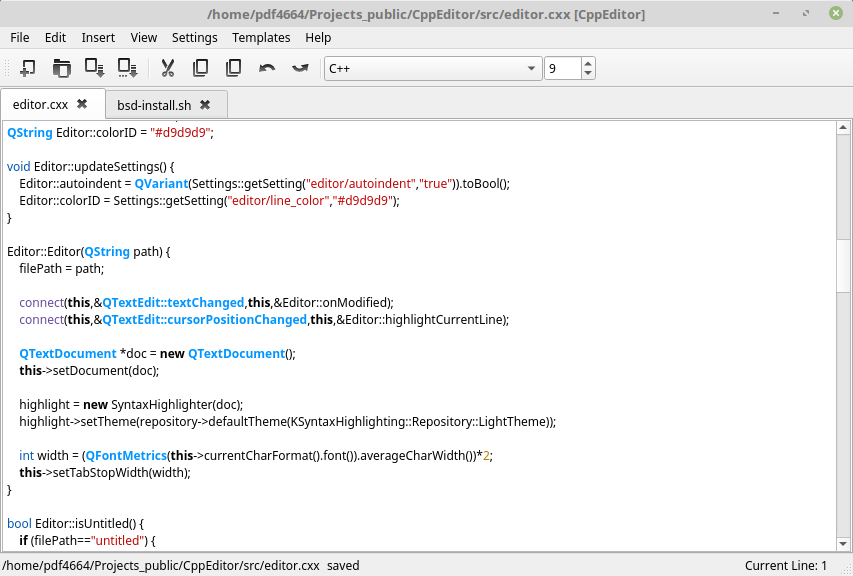
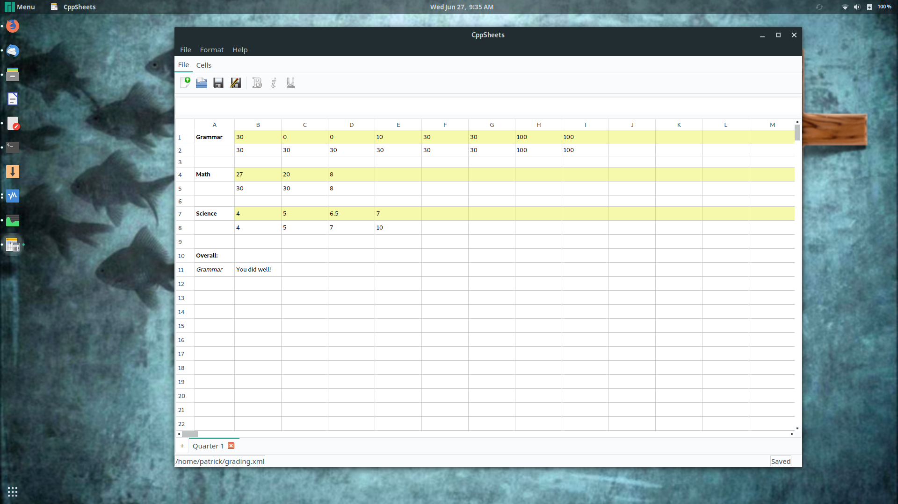
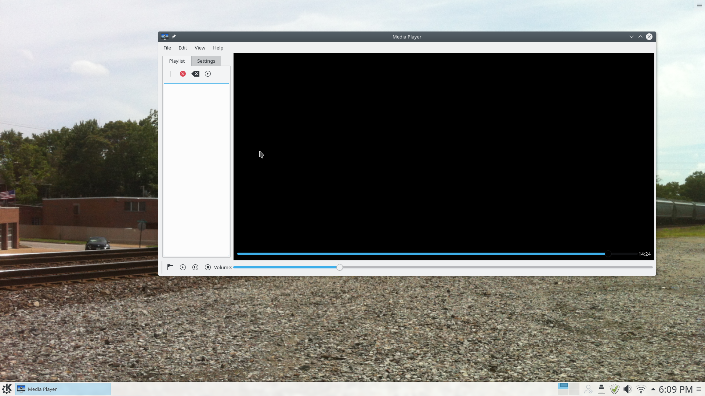
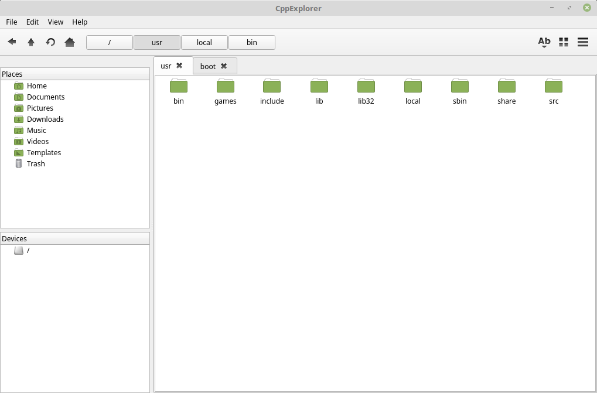

Desktop Applications
Desktop applications were one of the first areas I delved into when I got into computer science. Even now, I still really enjoy working on them, though admittedly, I don't work on them to the extent I used to. Below are screenshots of my favorite desktop applications, with some of the features and links to the source.
If you browse my Github profile, there are many other desktop applications in addition to these, but these are my favorites and best.
CppEditor
Source:
https://github.com/pflynn157/CppEditor
This program is probably the oldest that I still maintain. As you can tell, its a text/code editor. It has a lot of features, including:
- Syntax highlighting for most languages (via KDE Syntax Highlighting)
- Auto-indent
- Intelligent auto-indent (mainly bracket matching for certain languages)
- Multi-document interface
- Project view
- Support for most platforms

CppSheets
Source:
https://github.com/pflynn157/CppSheets
Even now, a few years later, this is one of my favorite applications of all time. It's a spreadsheet application written completely from scratch (using the Qt5 libraries). Some of the features include:
- Multi-document interface, with multi-sheet support within a document
- Cell formatting
- MS Excel compatible formulas
- Custom file format
- Basic, yet workable support for MS Excel files
- CSV loading support

CppMediaPlayer
Source:
https://github.com/pflynn157/CppMediaPlayer
This application is another favorite of mine. As its highly original name suggests, its a media application. It uses the Qt5 Multimedia library, which allows it to play most media formats on any platform. It has many of the features you'd expect of a multimedia application. Its also cross-platform- I've had little issue building it on Linux, Windows, or MacOS.

Odyssey
Source:
https://github.com/pflynn157/Odyssey
This application is yet another favorite with an interesting story behind it. As its name suggests, its a file explorer, but only for Linux, unlike my other applications. I wrote this a few years ago over a two day period- virtually the entire thing. At the time, I had caught a cold, so I staved off my boredom by writing this. After all, why rest when you have the time off... Anyway. Below are some of the features:
- Tabs (If you are a Linux or Mac user, you will know how great these are)
- Theme icon support (pulls from the current theme)
- Icon by mimetype (pulls from theme)
- Button and text address bars
- History support (used with the back button)
- Full cut/copy/paste support, across tabs and with multiple files
- Trash support (move to trash and restore from trash)
- Application chooser for files (based on mimetype)
- Keyboard shortcuts
- Places sidebar
- Drive list (harddrive, usb drive, cd, etc)
- Background refresh
